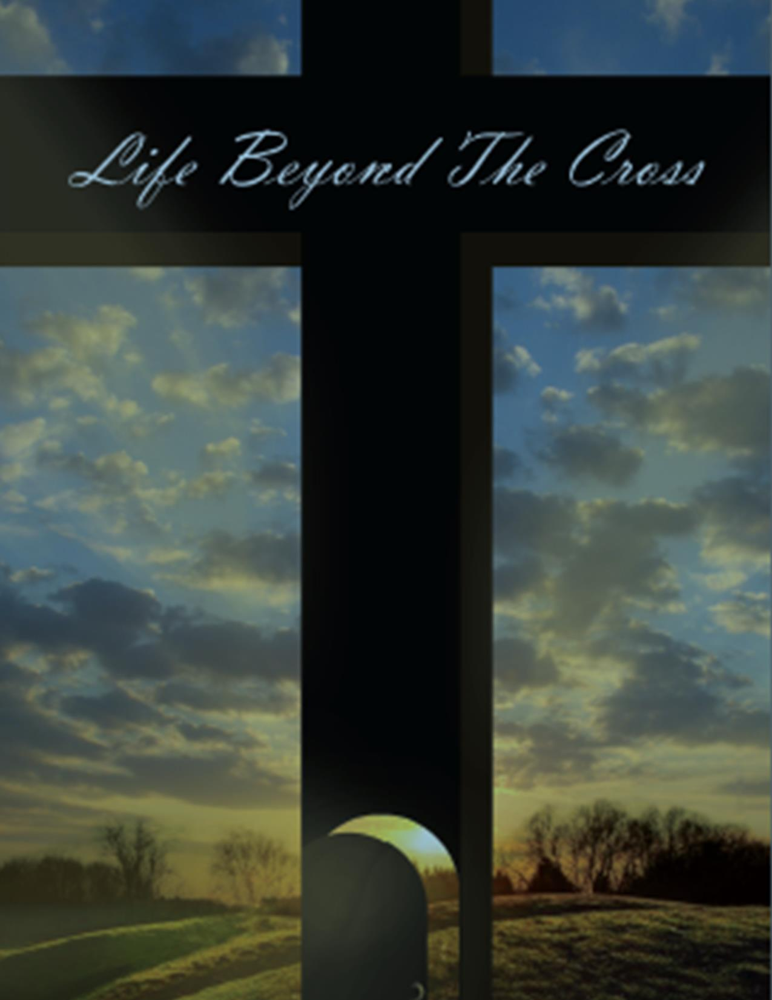

Chris Berster
Founder • Teacher • Author
Chris Berster is the founder of Life Beyond the Cross, a teaching ministry dedicated to equipping believers with the fullness of what was purchased at Calvary. Through years of personal study, prayer, and walking with the Holy Spirit, Chris has developed a deep passion for helping believers discover who they truly are in Christ — and to walk in the supernatural life that is their birthright.
Chris's teaching centers on the belief that the Cross was not the end of the story — it was the beginning. The resurrection opened a new reality for every believer: seated with Christ in heavenly places, filled with the Holy Spirit, clothed in resurrection power, and called to build the kingdom of God on earth.
"Our Life Beyond the Cross is to be supernaturally different from what it was before we accepted Jesus as Our Lord and Savior."
— Chris BersterDrawing from Ephesians 4:11, Chris teaches on the five-fold ministry gifts — apostle, prophet, evangelist, pastor, and teacher — and helps believers identify their own calling within the body of Christ. She also writes extensively on meditation, journaling, and the practical disciplines that lead to revelation knowledge.
Chris's resources — including teaching PDFs, videos, and the Life Beyond the Cross Program — are offered freely as a service to the body of Christ.
About the Ministry
Life Beyond the Cross exists to equip, encourage, and release believers into their God-given calling. All teaching resources are freely available — our only goal is to see the body of Christ walk in the fullness of who they are in Him.
Contact Us